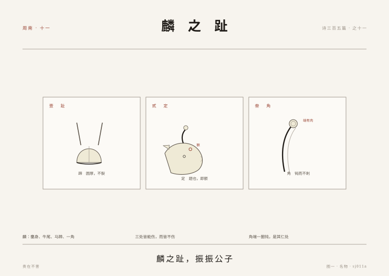
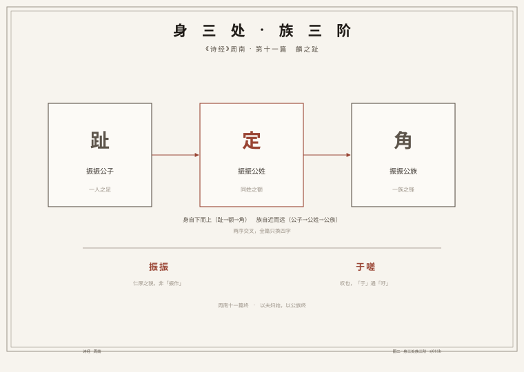

第十一篇 麟之趾
周南 · 之十一 SJ011
朗读 · 普通话
依经文正文朗读，句读从文；不配乐、不改速、不加拖腔。全库同一音色（豆包 TTS），非播音员录制。
一 解题
诗三判：
- 谁在说：一个旁观者，看着公族里的人，借麟来赞。他不署名，也不在场——全篇只有叹，没有叙述。
- 说什么事：只说三处——趾、定、角。麟身上最不伤人的三处：足不践、额不触、角不刺。
- 为何编在此：这是周南的末篇。《关雎》讲求配，此篇讲子孙；周南以「夫妇」开，以「公族」收，一条世系首尾接上。毛序说「《麟之趾》，关雎之应也」，正是此意——只是汉人把它读成了瑞应。
《毛序》：「《麟之趾》，关雎之应也。天下无犯非礼也。」——把麟当作瑞兽，说天下无人犯礼，故麟来应。
朱子《诗集传》：「麟，麕身牛尾马蹄，不履生草，不食生物，性善。振振，仁厚貌。」——朱子只取「性善」二字，把瑞应之说放下了。
本库的看法：这不是瑞应诗，是「不害」的赞。
全篇挑的三处——趾、额、角，正是麟身上三样能伤人的东西：足能践，额能触，角能刺。而麟之贵，恰在这三处都不伤人。赞公族，赞的不是富贵，是不害。
二 经文
第一章
麟之趾，振振公子，于嗟麟兮。
第二章
麟之定，振振公姓，于嗟麟兮。
第三章
麟之角，振振公族，于嗟麟兮。
分章：毛传、朱子皆三章，章三句。全篇只换四个字（趾/定/角、公子/公姓/公族），末句「于嗟麟兮」三章不动——叹到底，不改口。
三 韵读
| 一 |
趾、子 |
之部 |
| 二 |
定、姓 |
耕部 |
| 三 |
角、族 |
屋部 |
三章三换韵，末句不入韵而三章同字。「于嗟麟兮」是叹，不入韵，才叹得出——若押了韵，它就变成陈述了。
四 字义名物
- 麟——麒麟。《说文》「麒，仁兽也」。麕身、牛尾、马蹄、一角，角端有肉——传说如此，诗中只取其名。
- 趾——足。麟之趾，说它的脚。
- 定——额（《毛传》「定，题也」；题即额）。不是「安定」之定。
- 角——麟的角。角端有肉，故不刺。
- 振振——仁厚之貌（《毛传》「振振，仁厚也」）。不是「振作」「振翅」。
- 公子——诸侯之子。
- 公姓——同姓之亲（一说「公之孙」）。
- 公族——同族之人。
- 于嗟——叹词，「于」通「吁」。于嗟麟兮，即「唉，麟啊」。
五 今译
第一章
麟的脚啊，那不害人的脚；仁厚的公子，唉，真如麟啊。
第二章
麟的额啊，那不触人的额；仁厚的同姓，唉，真如麟啊。
第三章
麟的角啊，那不刺人的角；仁厚的同族，唉，真如麟啊。
译注：「于嗟」译作「唉」，因为它是叹，不是赞语；译成「赞美啊」就把一声长叹说成了评语。
六 章旨
一章：趾。最下之处，能践而不践。
二章：定。最高之处（额），能触而不触。
三章：角。最锐之处，能刺而不刺。
三章之序，是沿麟身自下而上走一遍：趾 → 额 →
角。而人之序是自近而远：公子（一人）→ 公姓（一族之同姓）→
公族（一族之众）。两序交叉：身自下而上，族自近而远。周南末篇的这点巧思，藏在四个字的替换里。
七 诗教
- 兴：以麟起兴，所兴即所咏——麟不伤人，公子亦不害人。此篇之兴，几与赋合。
- 观：可观一「贵」。贵不在位，在不害；能伤人而不伤人，才是贵。
- 群：一族之仁，起于一人之不害。公族之众，不过公子之影。
- 怨：无怨。这是一首纯粹的赞，赞到三叹而止。
八 分寸与边界
- 不可把麟坐实为「瑞兽现世」。毛序「关雎之应」是汉人的政教读法；诗里只有叹，没有「天下太平故麟出」这句话。
- 不可把「振振」解作「振作」「振翅」。它是仁厚之貌，一字解错，全篇由「厚」变「奋」。
- 不可把「定」解作「安定」「定静」。毛传「定，题也」，题是额；此为身体部位，非状态。
- 不可把三章读成同义反复。趾、定、角是身上三处，公子、公姓、公族是族中三阶；位置不同，义亦不同。
- 不可因「麒麟」二字把此篇读成神话。诗用其名以喻人，不必先信其兽。
九 存疑
- 麟是否实有：一说麟即麕（獐）类之兽，《诗》取其名；一说古无此兽，纯为传说。本库存疑：诗中麟是「名」，不必落实物，喻义自足。
- 公姓之训：一说「同姓」，一说「公之孙」（姓为孙之误）。本库从前说，后说存录。
- 于嗟之读：「于」通「吁」，叹词；一说「于」为发声。义同，皆叹。
- 三章次序是否有深意：一说只是凑韵换字；一说自下而上、自近而远。本库从后者——即便原是凑韵，读出来的次序仍是活的。
- 是否为美公族之诗：旧说美文王子孙；今人有以为一般祝颂。本库不坐实，只取「不害」之义。
十 跨典
- 《周南·关雎》——《毛序》以此篇为「关雎之应」。周南以夫妇始，以子孙终；一条世系，首尾相衔。
- 《礼记·礼运》「麟凤龟龙，谓之四灵」——麟之为灵，是后世之说；《诗》只用其「不履生草，不食生物」之性。
- 《说文》「麒，仁兽也」——「仁」字是理解此篇的钥匙：全篇赞的正是这个「仁」字，落在趾、定、角三处。
- 《春秋·哀公十四年》「西狩获麟」——麟之出，一为瑞，一为伤。此篇只取瑞的一面，不取获的一面。
- 《大雅·文王》「文王孙子，本支百世」——同是颂子孙之诗，彼言世数，此言性情；一在量，一在质。
十一 双卡与图
双卡五对：
| 趾（足，能践） |
定（额，能触） |
| 角（锐，能刺） |
三处皆不伤人 |
| 公子（一人） |
公族（一族） |
| 振振（仁厚） |
于嗟（叹） |
| 麟（喻） |
公子（所喻） |

图一 · 麟之趾·定·角 名物图

图二 · 身三处·族三阶 义理图
读图三处：
- 角端有肉：图上的角不尖，末端一圈钝。这是麟之所以为「仁兽」的物证——有角而不刺。
- 三处标红：趾、定、角三处标红，不是装饰，是全篇被替换的三个字。三章只动这三处。
- 蹄如马：蹄圆而厚，不裂。麟不履生草，蹄的形状先于德性——图取其形，义在其后。